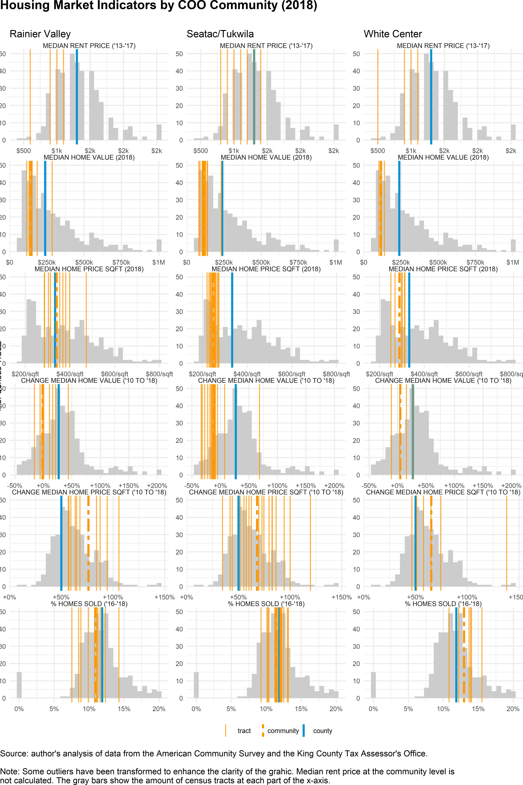

A Data Visualizations
How to Read these Plots
The following plots display a lot of data in a visually-dense format. The indicators for each COO Community are arranged in a column, with each grid square containing the following information:
- the indicator values for each census tract (represented by a thin yellow line)
- the indicator values for all census tracts (represented by a light gray histogram chart in the grid’s background)
- the indicator value for King County (represented by a thick blue line)
- for percent indicators only: the indicator value of all of the tracts in the COO community combined (represented by a thick dashed vertical line)
Reading the plot from top to bottom, one column at a time, the viewer can see how the tracts of each community compare to each other; to the community as a whole; to the county as a whole; and to the distribution of values amongst all King County census tracts.
Plots

Figure A.1: Vulnerability Indicators by COO Community (2013-2017)

Figure A.2: Demographic Change Indicators by COO Community (2007-2001 to 2013-2017)

Figure A.3: Housing Market Indicators by COO Community (2018)